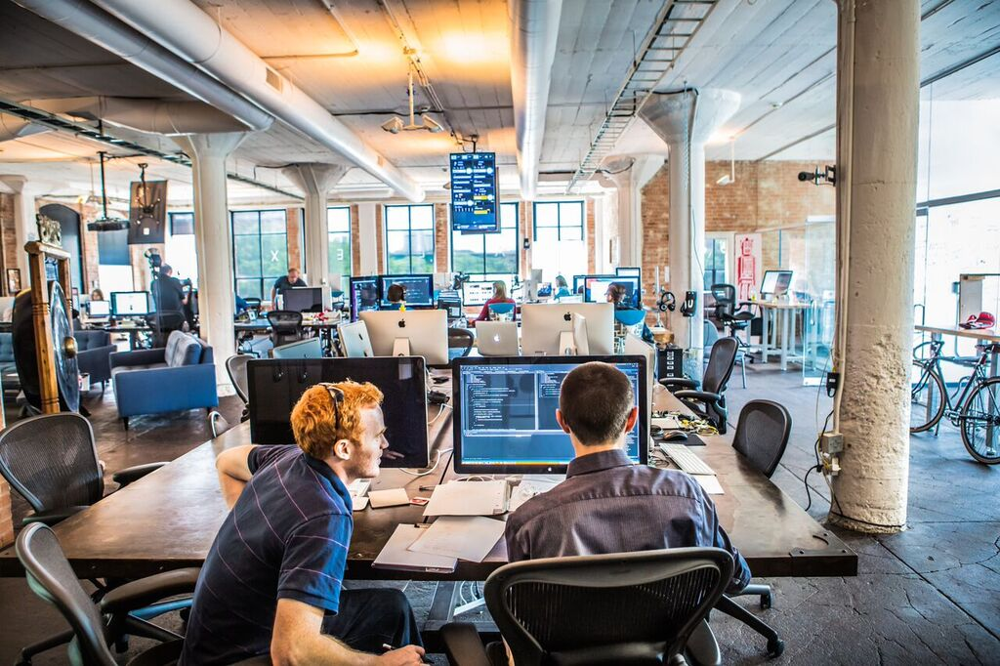

All jobs → Front-end Developer for Product Innovation Company
Front-end Developer for Product Innovation Company
Dallas, Texas, United States
Description

Are you someone that can build beautiful, responsive front-end web applications? Do you like keeping up with the latest techniques and technologies in front-end development? Are you able to collaborate with designers and really get UI/UX? Do you understand enough about the back-end to work with a dev team to integrate with a set of powerful, cutting-edge services in a fully Agile process? Do you want your creative technical ideas to be listened to, heard, and implemented? Do you want to create applications that people love?
Dialexa is expanding and growing our reputation for high quality end-to-end technology product development. We develop for a wide array of technology platforms and frameworks including mobile, web, Internet of Things (IoT), wearables, and embedded devices. We have an awesome culture that includes perks such as catered lunch everyday, snack bar and drinks according to your requests, fun quarterly team outings, startup swag, healthcare benefits, PTO, discounts for gym, travel, and mobile carrier, and relocation package (if you have to move to Dallas). To learn more about Dialexa, please visit www.dialexa.com
Things that will excite you as you create great applications for our customers
- A challenging environment that require collaborative problem solving.
- Beating deadlines on projects.
- Implementing amazing design by understanding its importance in products.
- Microseconds saved from load time make all the difference to you.
- Accepting and providing thoughtful, respectful constructive criticism.
Expectations (the more the better - we want great talent!)
- A portfolio of work that you can present - send us an online link if you have one.
- Experience using Ember.js (other front-end JavaScript frameworks are OK too like Angular).
- Experience using modern front-end tools (Sass, Bower, Broccoli, Grunt, etc.).
- A genuine interest in the latest technological developments in web development like HTML5, CSS3, SVG.
- A strong understanding of design principles, user interfaces, web standards and usability.
- Some knowledge of back-end development (Ruby on Rails, Node.js, etc).
- Located in, or willing to relocate to, the Dallas-Fort Worth area.